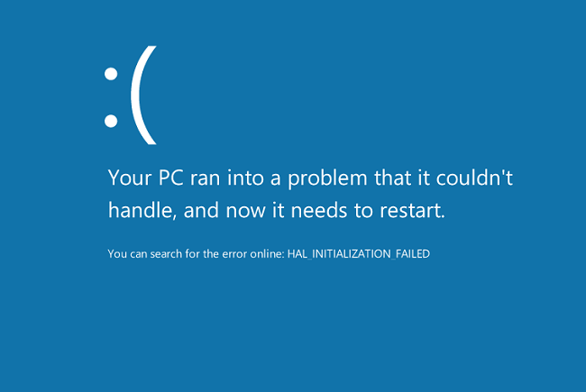

 棱镜事件的主角斯诺登透露的资料显示，众多科技公司曾与美国政府合作，帮助美国国家安全局，获得互联网上的加密文件数据。由于操作系统关系到国家的信息安全，目前俄罗斯、德国等国家已经推行，在政府部门的电脑中，采用本国的操作系统软件。Win 8和Vista是同类架构，而且Win 8还捆绑了微软的杀毒软件，它时时刻刻都在检查用户电脑，扫描数据信息。
电子产品正在让孩子们远离书籍。现在的学生们都不愿意读书了，因为他们的眼睛整天就盯在手机上。技术恐惧者们认为，我们正在抚养的下一代人完全不理解文学的价值。